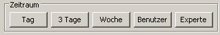
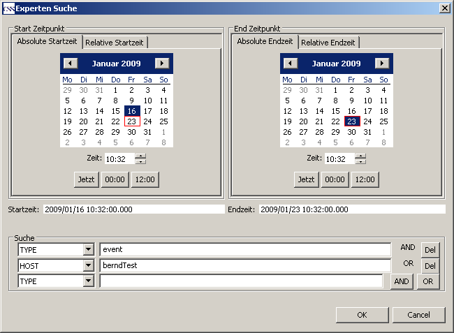
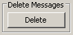

Archive Table zeigt ältere Nachrichten aus dem Archiv.
Für eine Anfrage wird eine Anforderung an den Datenbank-Server geschickt. Deswegen kann
bei komplizierten Filterbedingungen die Antwort bis zu 30 Sekunden dauern.

Anfordern aller Nachrichten für die Zeiträume 'Tag', '3 Tage' oder 'Woche'.

Das Zeitfenster für die Datenbankanforderung kann manuell gesetzt werden. Im Kalender links kann die Startzeit ausgewählt werden. Im Kalender rechts kann die Endzeit ausgewählt werden.

Die Bedienung der Zeiteinstellung funktioniert wie 'user button'.
In den zusätzlichen Feldern unten im Window können Filterbedingungen gesetzt werden.
Die Drop-Down-Liste links enthält alle verfügbaren Schlüsselworte der Eigenschaften von Nachrichten.
Im Textfeld in der Mitte steht die Zeichenkette, die im Inhalt der Nachricht vorkommen soll.
Auf der rechten Seite stehen die Operatoren ('AND', 'OR') , mit denen die Filterbedingungen verknüpft werden.
Im Beispiel ist die erste Filterbedingung 'message property 'TYPE'. Sie ist auf den Wert 'event' gesetzt. Sie wird
mit 'AND' mit der zweiten Bedingung 'message property 'HOST' verbunden, die auf den Wert 'berndTest' gesetzt ist.

Anfang und Ende der Zeitspanne der aktuellen Auswahl.

Anzahl der Nachrichten in der Datenbank-Antwort. Ein roter Hintergrund und der Zusatz '(maximum)' zeigen an, dass weitere Einträge in der Datenbank vorhanden sind, aber nicht in der Tabelle erscheinen. Die maximale Anzahl von Nachrichten ist eingeschränkt, um eine bessere Performanz zu erhalten. Sie kann in Eigenschaften (Menu 'CSS' → 'CSS-applications' → 'Alarm' → 'JMS Logs' → 'JMS log archive viewer' → 'Maximum number for result') gesetzt / verändert werden.

Der 'Export Button' schreibt alle aktuell ausgewählten Nachrichten im Excel-Format in eine Datei. Die maximale Anzahl von Nachrichten ist eingeschränkt und kann im preferences-Menu konfiguriert werden: Menu 'CSS' → 'CSS-applications' → 'Alarm' → 'JMS Logs' → 'JMS log archive viewer' → 'Maximum number for export'

Lösche alle aktuell ausgewählten Nachrichten aus der Datenbank. ACHTUNG: Auch wenn die Tabelle nicht alle Nachrichten darstellt, werden sie aus der Datenbank gelöscht.

Das Kontextmenu öffnet sich durch Rechtsklick auf eine Nachricht / Tabellenzeile :
 Zeigt alle Eigenschaften der ausgewählten Nachricht in einer externen Tabellenansicht.
Zeigt alle Eigenschaften der ausgewählten Nachricht in einer externen Tabellenansicht.
Verschickt die Eigenschaften der ausgewählten Nachricht per e-mail.
Löscht die ausgewählte Nachricht vom log view.
Löscht alle Nachricht vom log view.
 Kopiert den Wert der Eigenschaft NAME in die Windows-Zwischenablage.
Kopiert den Wert der Eigenschaft NAME in die Windows-Zwischenablage.
Startet weitere Anwendungen / plug-ins aus der aktuellen
CSS-Installation, die mit Prozessvariablen arbeiten. Diese Option ist nur sinnvoll,
wenn die Eigenschaft NAME der ausgewählten Nachricht eine Prozessvariable ist.